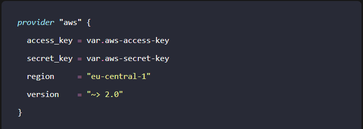

Deploy to ECS with
Fargate using
Terraform
November 3, 2023
“Everything can be code if you are brave enough”
This was the mantra that I said to myself when I decided to take the leap into IaC. I previously gathered some experience within the AWS world on how to run a web application (both simple S3 hosting and with ECS), but it was always “clicked together” manually.
So the next natural step in evolution would be to build the infrastructure with the help of code, and Terraform seemed like the way to go.
As doing this without a clear purpose would only be half the fun, a small internal project became the starting point for my foray into the world of IaC.
The project in question was the automatic generation of business cards for finleap employees, without the need to have a designer create the print-ready PDF.
This article will not focus on the application itself - but as a side note: It’s a simple Node.js server based on express, serving a React application, both bundled together in a Docker container.
The Target Setup
After some research about best practices on how to serve a dockerized application with ECS, this was the setup I was aiming for:

So the Docker container would be run in a Fargate task as I didn’t want to manage the EC2 instances for that, and this task is executed in a private subnet, talking to the outside world via the NAT gateway in the public subnet. The ALB in the public subnet funnels HTTP requests to the task, and the response is coming via the NAT gateway. Pretty simple.
Now clicking this setup together in the AWS console is not the most complicated task in the world, but for the sake of trying out Terraform, this was the chosen infrastructure to turn into code - or to be more specific: HCL.
Step 0 - The AWS provider
Before we can start talking to an AWS account, we have to setup the Terraform provider, which looks something like this:

You can actually also leave out access_key and secret_key, then Terraform will use the values stored in your '.aws/config'.